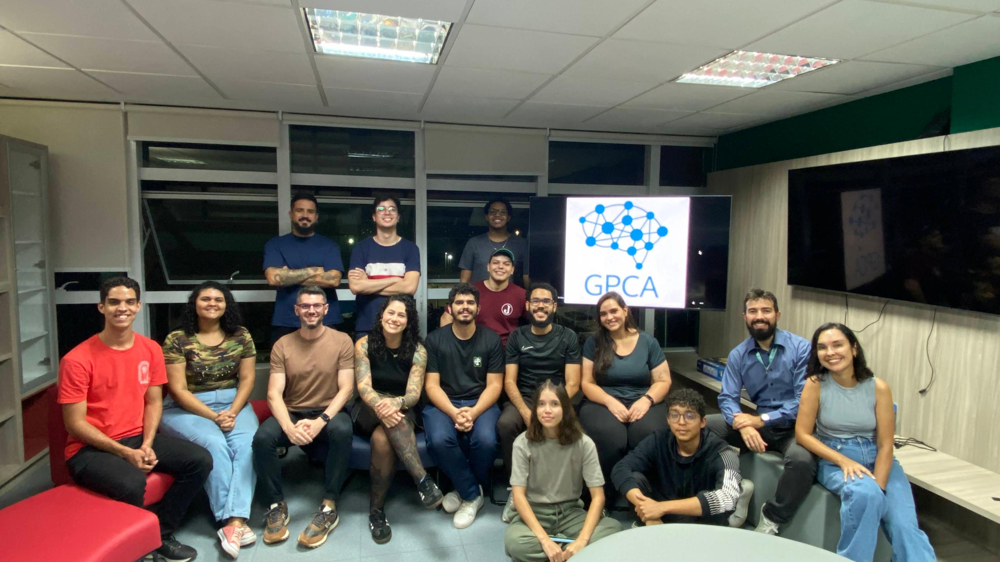

Onde estamos
O Grupo de Pesquisa em Computação Aplicada nasceu e atua dentro do IFB Campus Brasília, imerso no ecossistema de educação pública e tecnologia da capital. Para nos encontrar presencialmente, basta seguir até o Bloco G, sala G2-09. É lá que fica o nosso laboratório principal, o LabGPCA!

Laboratório de Computação Aplicada
– LabGPCA
Registrado no CNPq desde 2019, o espaço é utilizado para reuniões do grupo, orientações de TCC, PIBIC e PIBITI, desenvolvimento de projetos de pesquisa e atividades em parceria com outras instituições. Também é disponibilizado aos estudantes vinculados ao GPCA para estudo, desenvolvimento e experimentação.
O laboratório conta ainda com equipamentos e infraestrutura computacional para pesquisa, desenvolvimento tecnológico e inovação nas áreas de software e eletrônica.